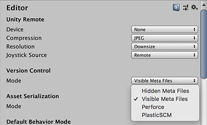

版本控制集成
Unity 可集成 Perforce 和 Plastic SCM 等版本控制系统。请参阅这些页面了解所选择的版本控制系统的具体信息。
使用版本控制系统可以更方便用户（或多个用户）管理其代码。此系统用于存储文件并管理它们的访问权限。就 Unity 而言，包括与 Unity 项目相关的所有文件。通过使用版本控制，可以跟踪对源代码的所有更改，还可了解更改人员、更改原因以及更改内容的信息。这样可以轻松恢复到早期版本的代码，或者比较版本之间的差异。而且，更容易找出错误最初发生的时间，以及是什么更改可能导致了该错误。
在 Unity 中设置版本控制
根据版本控制软件的说明来设置该软件，然后按照以下步骤操作：
1.使用所选客户端在计算机上设置或同步工作空间（请参阅 Plastic SCM 集成指南或 Perforce 集成指南以获取此步骤的帮助）。 1.将现有项目复制到工作空间，或启动 Unity 并在工作空间中创建新项目。 1.打开项目，选择 Edit > Project Settings__，然后选择 Editor__ 类别。 1.在 Version Control 下，根据所选的版本控制系统选择__模式 (Mode)__。 
1.填写版本控制设置，例如用户名/密码/服务器/工作空间。 1.如果希望文件在添加到项目（或磁盘上的文件夹）时自动添加到版本控制系统，请保持 Automatic add 为选中状态。否则，需要手动添加新文件。 1.可以选择脱机工作。仅当了解如何将更改手动集成到版本控制软件中时，才建议使用此模式（脱机使用 Perforce）。 1.根据工作团队的偏好和选择的版本控制系统，可以编辑 Asset Serialization、Default Behaviour Mode 和 Sprite Packer 选项。 1.单击 Connect 并确认片刻后在 Connect 按钮上方显示“Connected”。 1.使用标准客户端（例如 p4v）确保添加 Assets 和 ProjectSettings 文件夹中的所有文件（包括以 .meta 结尾的文件）。
注意：随时都可以转到 Prefences 菜单并选择 __External Tools__，然后调整 Revision Control Diff/Merge 工具。
使用版本控制系统
就目前而言，您应该能够通过右键单击 Project 视图中的资源（而不是通过版本控制客户端）来直接执行大多数重要的版本控制操作。版本控制操作取决于所选择的版本控制系统，下表显示了每个版本控制系统中可直接使用的操作：
| 版本控制操作 | 描述 | Perforce | Plastic SCM |
| 签出 (Check Out) | 允许对文件进行更改 | 是 | 是 |
| 与 HEAD 的差异 (Diff against head) | 比较本地文件和 HEAD 中的文件之间的差异 | 是 | 是 |
| 获取最新 (Get Latest) | 拉取最新更改并更新文件 | 是 | 否* |
| 锁定 (Lock) | 阻止其他用户对文件进行更改 | 是 | 否** |
| 标记添加 (Mark Add) | 在本地添加但不添加到版本控制系统 | 是 | 是 |
| 解决冲突 (Resolve Conflicts) | 解决已被多个用户更改的文件的冲突 | 是 | 否*** |
| 还原 (Revert) | 放弃对打开的已更改文件所做的更改 | 是 | 是 |
| 还原未更改内容 (Revert Unchanged) | 放弃对打开的未更改文件所做的更改 | 是 | 是 |
| 提交 (Submit) | 将文件当前状态提交给版本控制系统 | 是 | 是 |
| 解锁 (Unlock) | 解锁并允许任何人进行更改 | 是 | 否** |
* 要使用 Plastic SCM 获取最新更改并更新文件，需要使用版本控制窗口。
** 使用 Plastic SCM 来锁定和解锁需要您在外部编辑特定的 Plastic SCM 锁定文件，请参阅 Plastic SCM 集成页面以了解更多信息。
*** 冲突会显示在版本控制菜单中，但需要在 Plastic SCM GUI 中解决。


版本控制窗口
可以从__版本控制窗口__ (Window > Asset Management > Version Control) 中查看位于变更列表中的文件。该窗口停靠在 Editor 中的 Inspector 旁边：

“Outgoing”选项卡列出等待提交到版本控制系统的所有本地更改，而“Incoming”选项卡列出需要从版本控制系统中拉取的所有更改。
通过右键单击此窗口中的资源或变更列表，可以对它们执行操作。要在变更列表之间移动资源，只需将资源从一个变更列表拖动到目标变更列表的标题上。
图标
Unity Editor 中会显示以下图标，从而显示文件/资源的版本控制状态：
| 图标 | 含义 | 其他信息 |
 |
已在本地添加文件 | 等待添加到版本控制系统 |
 |
文件由另一个用户添加到版本控制系统 | 等待添加到版本控制系统 |
 |
文件已被您签出 | 已在本地签出 |
 |
文件已被另一个用户签出 | 已远程签出 |
 |
合并此文件时存在冲突 | 需要解决冲突 |
 |
文件已被您删除 | 等待版本控制系统中删除 |
 |
文件已被另一个用户删除 | 等待版本控制系统中删除 |
 |
文件尚未受版本控制 | 无 |
 |
文件已被您锁定 | 其他用户无法修改 |
 |
文件已被另一个用户锁定 | 您无法修改 |
 |
另一个用户已签入此文件的新版本 | 使用“Apply Incoming Changes”获取最新版本 |
 |
服务器正在请求此文件的版本控制状态，或正在等待响应 | 只有在使用 Perforce 等集中式版本控制系统时才会看到此图标 |
注意事项：
- 有些版本控制系统在资源标记为 Checked out 之前不允许编辑资源（除非已选中 __Work offline__）。
- 保存对 .scene 文件的更改时，将自动签出。
- Project Settings Inspector 的右下角有一个 checkout 按钮可用于签出设置。
- 通常会出现黄色警告，提醒将项签出以便对其进行更改，主要出现在 Project Settings Inspector 中。
- 在 Plastic SCM 中会自动添加/签出自动生成的资源（例如光照贴图）。
在提交时自动还原未更改的文件
处理资源时，Unity 会自动签出资源文件以及相关的 .meta 文件。但是，在大多数情况下，不会修改 .meta 文件，这可能会导致一些额外的工作，例如在稍后合并分支时。
脱机模式
Unity 支持在脱机模式下工作，例如，在没有网络连接到版本控制库的情况下继续工作。
- 如果希望能够与版本控制系统断开连接，请从 Version Control Settings 中选择 Work offline。
允许异步更新
Unity 支持某些版本控制提供程序（如 Perforce）的异步版本控制状态查询。此选项允许这些提供程序更新文件的版本控制状态，而不会使 Unity 卡顿。当与版本控制服务器的连接存在高延迟时，请使用此选项。
- 如果在状态查询期间遇到卡顿问题，请转到 Version Control Settings 并选择 Allow Async Update。
注意：只有状态查询才是异步的。更改文件状态或需要了解最新文件状态的操作则是同步执行的。
故障排除
如果 Unity 无法将更改提交到版本控制客户端（例如，如果服务器关闭或发生许可证问题），这些更改将存储于单独的变更集。
使用 Asset Server
要了解有关使用 Asset Server（Unity 的内部版本控制系统）的更多信息，请参阅关于 Asset Server的文档。
使用其他版本控制系统
要使用 Unity 不支持的版本控制系统，请在 Editor 窗口中选择 MetaData 作为版本控制的 Mode。这样一来，即可使用您选择的版本控制系统来管理这些资源的源资源和元数据。要了解与此相关的更多信息，请参阅关于外部版本控制系统的文档。
2017–02–12 页面已修订并只进行了有限的编辑审查
在 Unity 2017.3 中添加了关于异步版本控制状态查询的文档。